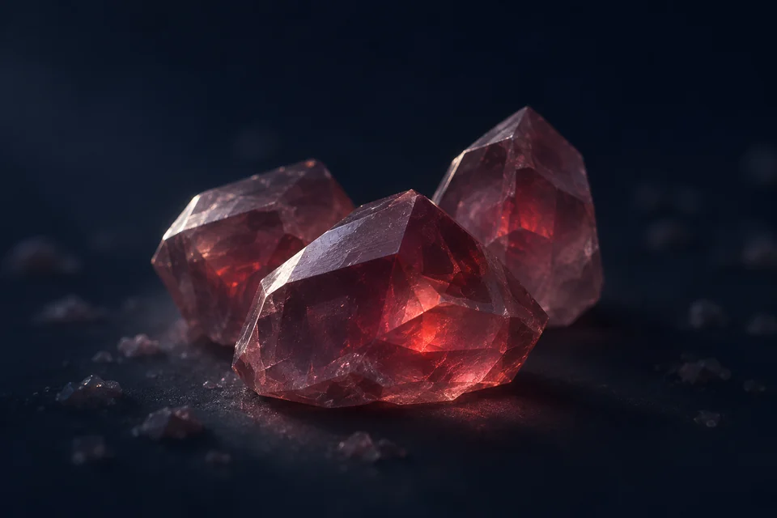

Published work已发表工作
Persistent luminescence nanomaterials长余辉发光纳米材料
Gallium-based and spinel-type nanoparticles doped with Cr³⁺, Pr³⁺ and other ions store energy under light and release it slowly, much of it in the near infrared. I design these compositions and use their emission for ratiometric temperature sensing, information encryption, and imaging and theranostics.
以 Cr³⁺、Pr³⁺ 等离子掺杂的镓基和尖晶石型纳米颗粒，能在光照下储存能量，再缓慢释放出来，其中很大一部分落在近红外区。我设计这些材料的组成，并利用它们的发光做比率型温度传感、信息加密，以及成像与诊疗。
See the publications查看论文